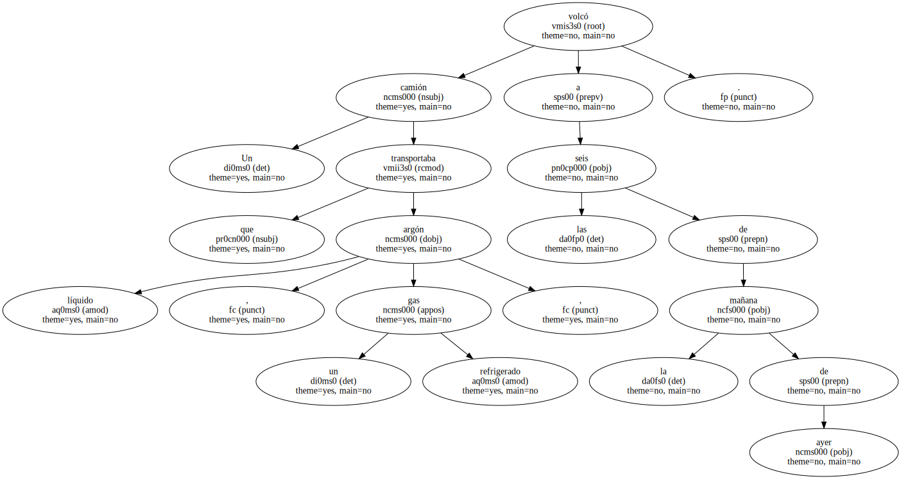
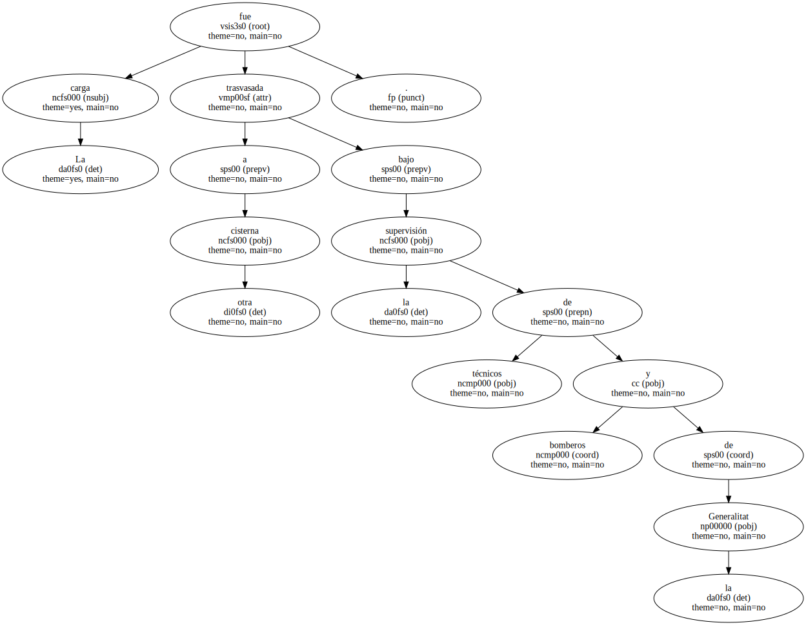
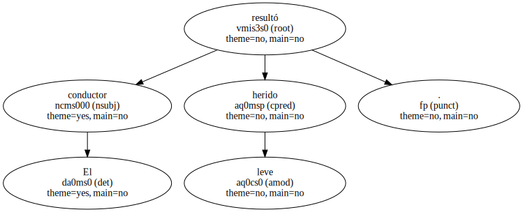

Un camión que transportaba argón líquido , un gas refrigerado , volcó a las seis de la mañana de ayer.
La carga fue trasvasada a otra cisterna bajo la supervisión de técnicos y bomberos de la Generalitat.
La circulación quedó interrumpida en dirección a Lleida hasta las 11.45 horas.

El conductor resultó herido leve.
